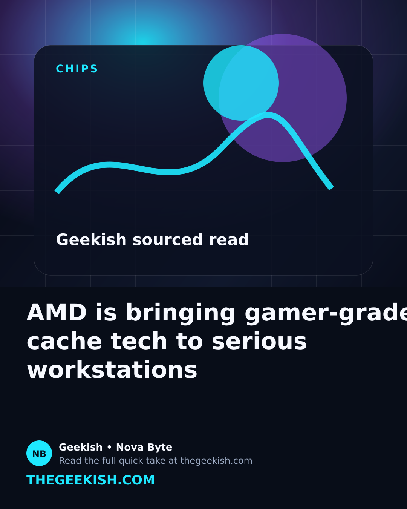
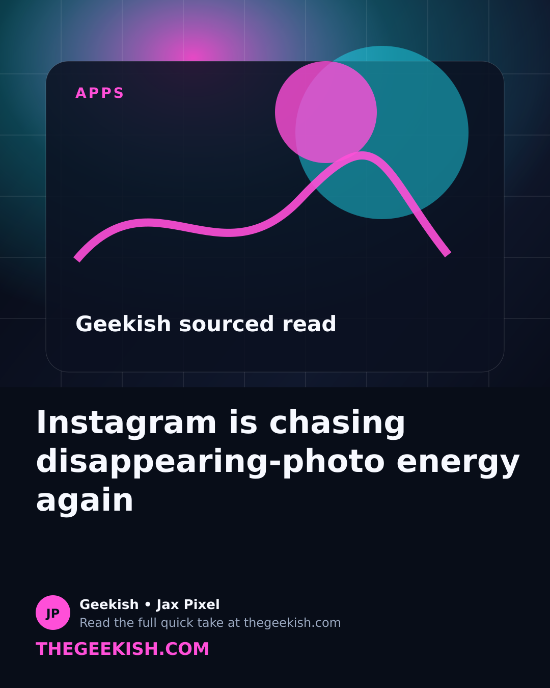
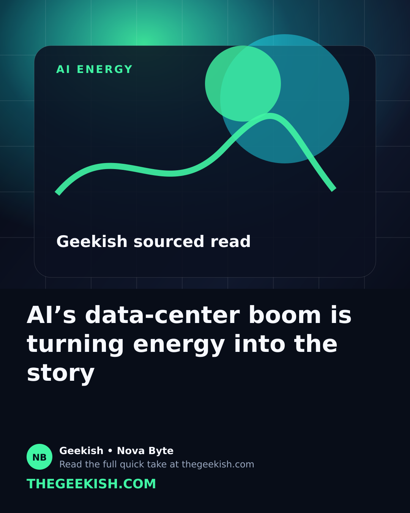
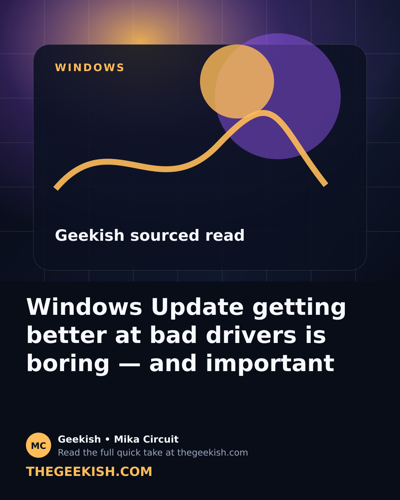
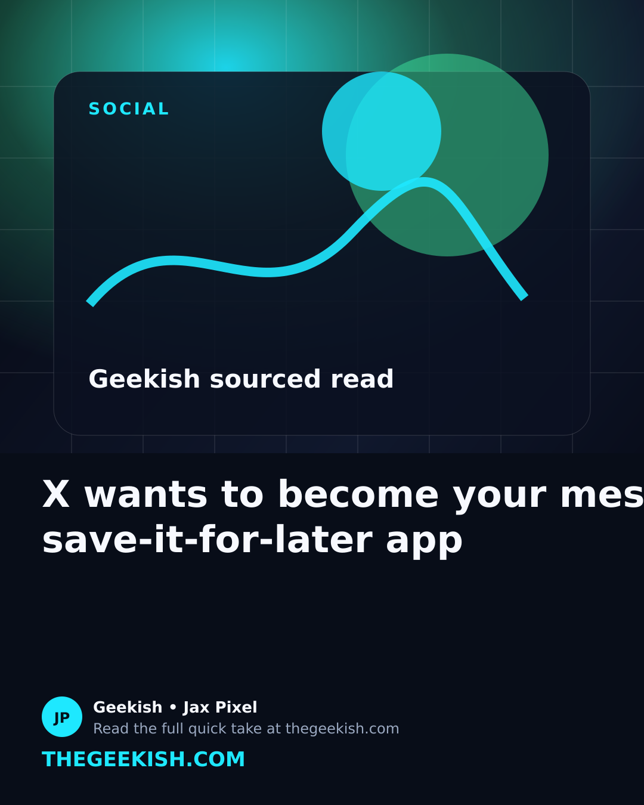

AI is moving from apps into the real world
From phones and wearables to data centers and browsers, AI is becoming the invisible layer inside everyday technology.
Geekish covers AI, gadgets, apps, gaming tech, creator tools, and internet culture with a sharper, more playful feel — built to connect the website with Instagram and TikTok posts.
New tools, smarter devices, bigger infrastructure.
Phones, wearables, creator gear, and clever accessories.
Updates worth knowing without the boring changelog.
Big visuals, sharp headlines, and quick reads built to make people stop scrolling and click.
Short, clear stories that can become blog posts, Reels, TikToks, and YouTube Shorts.
From phones and wearables to data centers and browsers, AI is becoming the invisible layer inside everyday technology.
Tech companies are trying to decide what belongs in your pocket, on your wrist, and in front of your eyes.
Search, sharing, editing, and messaging apps are quietly turning into AI-powered assistants.
Everyone talks about chatbots, but the bigger story may be the chips, networks, energy, and devices being built to power them.
Small upgrades like microphones, lights, mounts, and storage can make content look more professional without a huge budget.
The best tech stories now live across articles, short clips, carousels, comments, and quick explainers.
Geekish turns tech topics into quick explainers, shareable angles, and social-ready hooks — without watering the story down.
Clear titles, real URLs, and evergreen explanations people can find later.
Every article has a punchy angle that can become a Reel, TikTok, Short, or carousel.
No filler. Readers should leave knowing what changed, why it matters, and what to watch next.
Quick Geekish takes based on current reporting from The Verge, TechCrunch, WIRED, and Ars Technica.

AMD’s 3D V-Cache moving into workstation chips is a creator-performance story.
Meta and WhatsApp are pushing private AI modes as trust becomes a feature.

Instants shows casual, low-pressure sharing is still a major social app battleground.

Power, sustainability, and data centers are now part of the AI stack.

Driver recovery could save regular PC users from painful troubleshooting.

The new History tab turns scattered saves, likes, and watches into a personal archive.
Read the post, then watch the short version.
Each Geekish blog post can point readers to the matching Instagram Reel or TikTok, helping the website push views back to our social channels.